INFORMAÇÕES SOBRE A OBRA
MANGÁ:Capítulos305
Volumes34
Editora Weekly Shonen magazine
Panini Comics
Weekly Shonen magazine
Panini Comics
Weekly Shonen magazine
Panini Comics
ANIME:Episódios48
Temporadas2
EstúdioDavid Production
Autor
Atsuchi Okubo
MEUS PERSONAGENS FAVORITOS
(Demônio / Pegadas do Demônio / Herói)

Shinra é nosso protagonista, ele é um integrante da 8ª brigada
de bombeiros especiais. O objetivo dele é se tornar um herói e
salvar todas as pessoas da combustão espontânea. Após perder sua
mãe e, supostamente, seu irmão quando ainda criança, Shinra
despertou seus poderes de 3ª geração, quando mais velho,
participou de uma academia de treinamento para e se tornar um
bombeiro especial a fim de descobrir a verdade sobre o incêndio
que tirou sua família 12 anos atrás e libertar as pessoas do
terror das chamas. Mais tarde ele descobre que seu irmão ainda
está vivo e que eles dois possuem um raro poder, chamado de
Adora Burst. Shinra é o 4ª pilar.
HABILIDADE DE IGNIÇÃO:
(Terceira Geração) Shinra é capaz de produzir e controlar chamas que saem dos seus pés, dando a ele muita velocidade e mobilidade em combate, sendo capaz de mudar de direção em pleno ar e até mesmo voar. Também é capaz de usar símbolos de máo para mudar o fluxo de suas chamas, ganhando mais velocidade ou poder explosivo. Com a benção da Evangelista, Shinra é capaz de ultrapassar a velocidade da luz.HISTÓRIA
ARCOS
Introdução
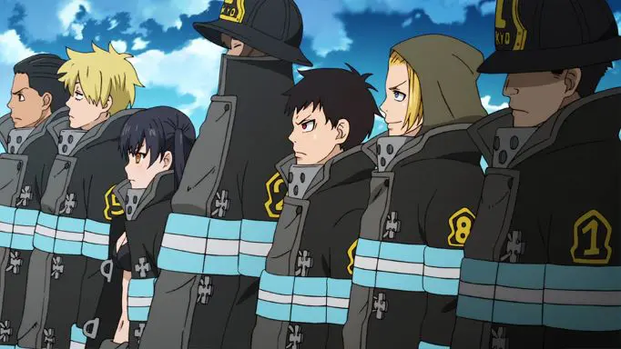 Aqui é onde tudo começa e onde nós conhecemos muitos dos personagens importantes para a obra. Nós conhecemos Shinra, nosso protagonista e um novato com um sonho de ser um herói e salvar as pessoas do terror das chamas que entra para a 8ª brigada especial de bombeiros e de quebra conhecemos toda a 8ª brigada, o capitão Obi, o tenente Hinawa, Maki a bombeira de primeira classe e a freira Iris. acompanhamos a ambientação de Shinra com a equipe e a sua nova moradia, vimos a primeira missão oficial de Shinra, onde ele tem um pouco de dificuldade no inicio, mas pega o jeito depois e completa sua missão, logo chega alguém que Shinra não esperava ver, Arthur, antigo companheiro de treinamento de Shinra qeu pensam ser o Cavaleiro rei, eles sempre estão discutindo, mas são bons amigos, em sua primeira missão, Arthur se encarrega de eliminar o infernal, Shinra fica um pouco confuso, mas Obi o tranquiliza dizendo que é para o bem de todos, "A coisa mais assustadora sobre seu trabalho, é se acostumar com ele". Logo começa o torneiro dos bombeiros novatos, uma disputa entre os novatos de todas as brigadas especiais, aqui nós conhecemos Leonard Burns(capitão da 1ª brigada especial), Tamaki Kotatsu(novata da 1ª Brigada), Takeru Noto(novato da 2ª Brigada). Joker(um fora da lei que se auto-intitula de "Anti-Herói") invade a competição para falar com Shinra e alimentar sua curiosidade, falando de coisas do passado de Shinra, Shinra e Joker entram em combate, Shinra não tem chance, Joker diz que vai explodir o prédio e Shinra corre para tirar todos os novatos de dentro do prédio, Joker foge e o torneio termina.VS a 5ª Brigada
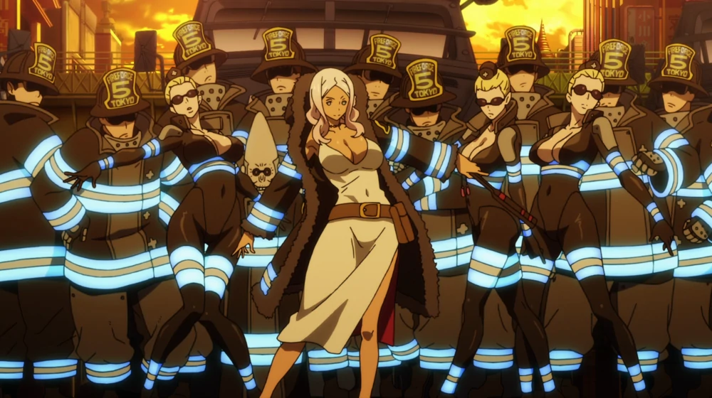 Esse arco começa com a estranha aparição de um infernal inteligente com a capacidade de falar e tudo, Shinra e sua brigada conseguem derrotar o infernal, mas quando estavam prestes a finaliza-lo a 5ª Brigada aparece e leva o infernal sob custódia, tudo isso acontece com muito atrito entre as duas brigadas, Hibana(capitã da 5ª brigada) diz que vai levar o infernal para fazer experimentos e testes com ele, mas isso nao agrada em nada ao 8ª, já que aquele infernal, um dia, foi uma pessoa comum, mas mesmo assim Hibana e sua equipe acabam por levar o infernal. Iris resolve ir até o base da 5ª brigada para falar com Hibana, mas acaba por ser feita de prisioneira por Hibana, Assim que o 8ª fica sabendo disso, na mesma hora começam uma operação de resgate para salvar sua companheira, eles invadem a base da 5ª e saem brigando com tudo e todos que ficam entre eles e sua companheira, Shinra enfim chega a sala da capitã onde Iris esta sendo mantida, eles começam uma intensa batalha, e é nos revelado o passado de Hibana e Iris, elas cresceram juntas em convento de freiras, mas um certo dia todo pegou fogo e apenas Hibana e Iris sobreviveram, desde então, Hibana nunca mais foi a mesma e perdeu toda sua fé no Deus sol, pois nunca tinha sido a mais devota das freira e mesmo assim saiu viva enquanto suas companheiras foram pegas pelo fogo. Shinra passa muitas dificuldades contra ela, mas enfim vence a luta, libertando Iris e fazendo Hibana repensar sobre suas atitudes e ações. Hibana decidi ajudar o oitavo nas suas investigações e revelas para eles uma importante informação, infernais estão sendo criados artificialmente com o uso de insetos e de que a 1ª brigada possa estar envolvida.VS a 1ª brigada
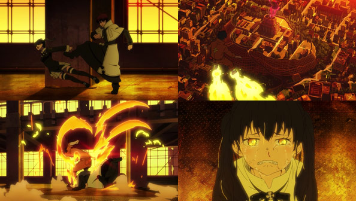 Com as informações dada por Hibana, Shinra e Arthur se infiltram na 1ª brigada para descobrir mais sobre esse assunto e quem seria o responsável por isso, eles começam a investigar os membros da brigada e acabam descobrindo que Rekka, um tenente da 1ª brigada, esta pegando crianças fazendo experimentos com elas, implantando um inseto nelas vendo se alguma despertara alguma habilidade e compatibilidade com as chamas, Tamaki acaba o ajuntando sem saber, mas logo quando percebe as verdadeira intensões de Rekka, entra em uma batalha contra o mesmo, mas Tamaki não tem chance alguma, humilhada e derrotada, ela grita por ajuda, e Shinra vem ao seu resgate derrotando Rekka em uma batalha fantástica, mas Rekka acaba sendo morto pelos roupas brancas, um grupo que cira infernais e pretendem ativar o cataclisma novamente. Shinra acaba descobrindo que é o possuidor de uma rara chama, chamada de Adolla burst.Asakusa
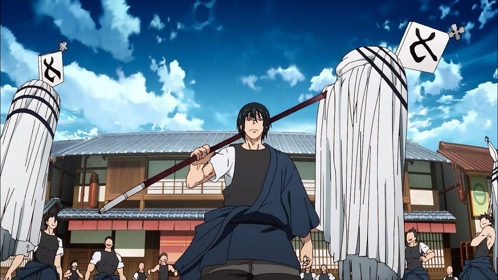 Shinra e o 8ª resolvem investigar a 7ª Brigada, comandada por Benimaru Shinmon o bombeiro mais forte de todos e um hibrido de gerações, conhecido como rei da destruição de Asakusa, tudo vai bem até que coisas estranhas começam a acontecer na cidade de Asakusa, muitas duvidas surgem e Benimaru acaba entrando em conflito com Obi, mas Konro(vice-capitão da 7ª) acaba pondo juízo na cabeça de Benimaru que sessa o ataque, muitas coisa estranhas continuam acontecendo na cidade, tem alguém se disfarçando e atuando como pessoas da cidade, só Benimaru é capaz de parar isto tudo e como bom rei da destruição, ele ordena que todos se batam para encontrar os impostores, e por mais incrível que isso pareça, deu certo, mas um demônio aparece na cidade e benimaru tem que detê-lo, ele consegue, afinal ele é o mais forte de todos.Família Vulcan
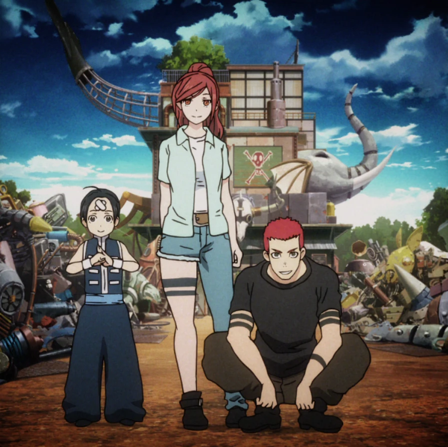 O oitavo está tendo problema com seus equipamentos e decidem que precisam de um engenheiro para sua brigada, eles então vão atrás de Vulcan um brilhante engenheiro e mecânico para recruta-lo para o 8ª, Vulcan se nega muitas vezes e em meio a tudo isso, conhecemos Lisa e Yu, duas pessoas que moram com Vulcan em sua oficinal, DR. Giovanni(capitão da 3ª brigada) aparece querendo Vulcan entregue uma tal de "Chave da Amaterasu" e ai nos é revelado que a família de Vulcan foi responsável pela construção da Amaterasu, mas todos morreram misteriosamente, Vulcan se nega a entregar qualquer coisa a Giovanni, então Giovanni vai embora, mas se revela estar do lado da Evangelista e dos roupas brancas e manda matarem Vulcan, Shinra, Arthur e Iris que ainda estavam la presentes, ficam e defendem Vulcan, eles conseguem salvar Vulcan, mas Giovanni leva a chave, no fim de tudo, Sho, irmão que Shinra pensava estar morto, aparece e acaba derrotando todos ali presentes, Sho está do lado dos roupas brancas e também possui uma Adolla Burst, além de ser o 3ª pilar do plano do evangelista, revela que Shinra é o 4ª pilar e de que é necessário de 8 pilares para causar o cataclisma novamente, Joker aparece e salva Shinra e seus amigos das garras dos roupas branca. Vulcan decide entrar para o 8ª.Perseguição ao Evangelista
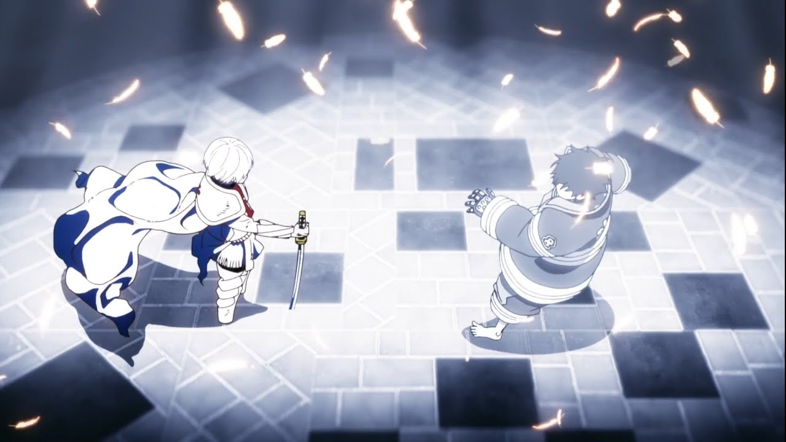 O 8ª decide ir atrás dos roupas brancas para impedi-los de agir, eles vão até o Nether onde os roupas brancas se escondem e la começa uma feroz batalha, o 8ª é divido e cada trava sua própria luta contra os inimigos, Shinra enfrenta seu irmão e acaba descobrindo que ele não se lembra de nada dos tempos em que viviam juntos, depois de muita luta Shinra consegue desconcentrar seu irmão fazendo ele lembrar de coisa do passado, mas logo em seguida Haumea(2ª pilar) aparece e acaba com toda a brincadeira, eles quase são pegos, mas o oitavo consegue fuigr de volta para a superfície. E assim acaba a primeira temporada de Fire Force.5ª pilar
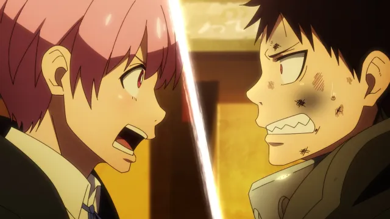 A segunda temporada começa com Shinra indo se encontrar com o capitão da 4ª brigada, Soichiro Hague, para lhe fazer perguntas sobre Adolla, mas não consegue muitas informações. Nós conhecemos Inca, uma ladra de incêndios, que logo descobre ser o 5ª pilar onde começa uma guerra por ela, quem sairá vitorioso nessa, roupas brancas ou os bombeiros, quem conseguira te-la primeiro, Inca no fim decidi ir com os roupas brancas por gostar do perigo e da adrenalina e não queria ser protegida pelos bombeiros.Península chinesa
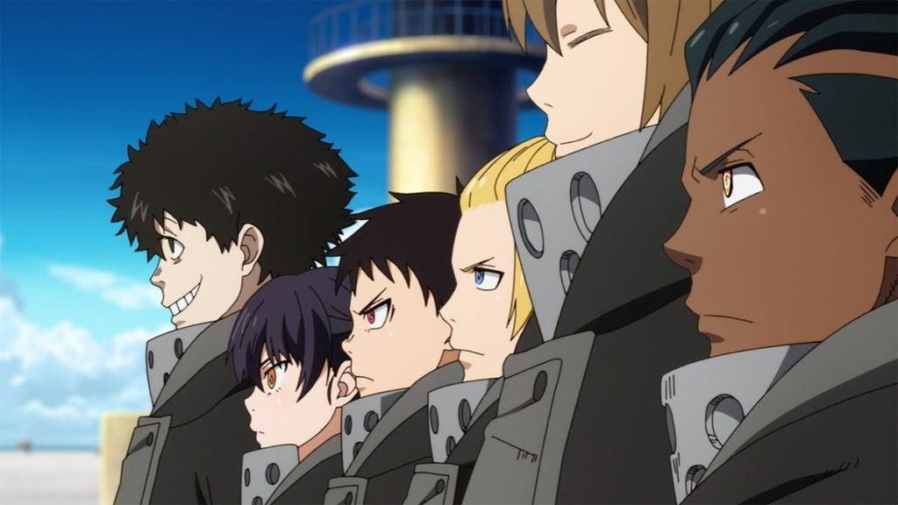 Shinra e seus amigos vão para a china investigar um fenômeno que em acontecendo por laá, eles descobrem animais que falam e até uma cópia da Amaterasu, segredos estranhos se escondem lá dentro, como... o número PI??, um demônio aparece e eles lutam por suas vidas Shinra, eles descobrem que Amaterasu é alimentada em troca de uma vida humana, uma garota que é o 1ª pilar, então eles retornam a Tokyo e informam tudo a seus superiores. O governo e igreja do sol decidem que não seriá bom se essa informação se espalhasse, então nada é noticiado.Invasão à igreja do sol sagrado
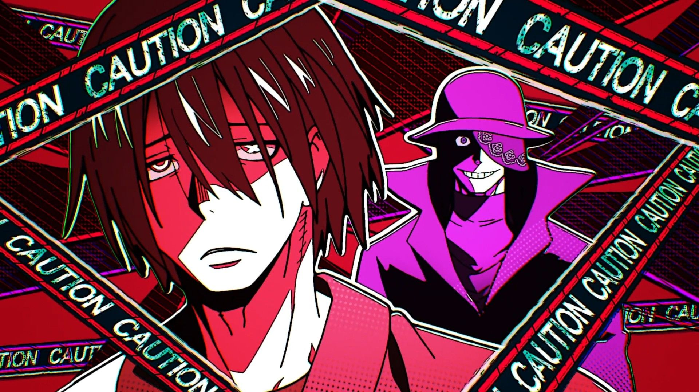 Joker resolve invadir a igreja do sol sagrado atrás de alguma resposta ou qualquer pista sobre a verdade, ele então resolve pedir a ajuda de Benimaru já que ele também odeia a igreja do sol, eles então invade a igreja a força e saem derrubando todo mundo até chegar no mais baixo nível da igreja, no subterrâneo, Joker acaba encontrando seus antigos "colegas de equipe" da qual ele fugiu um dia. Eles descobrem de que a igreja do sol e a história por trás dela é uma fraude e de que na verdade ela foi criada pela Evangelista.Invasão às industrias Haijima
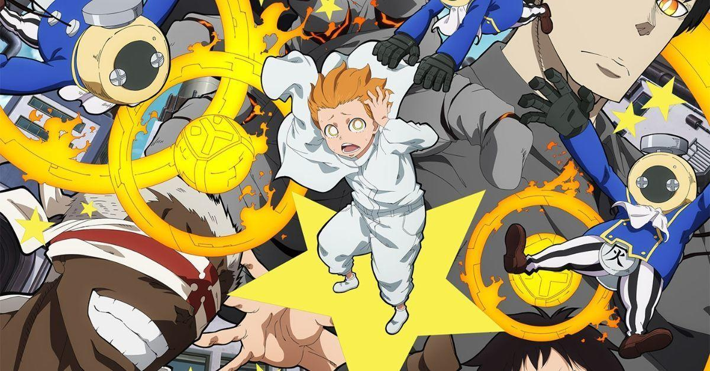 O 8ª invade Haijima para descobrir coisas sobre o funcionamento da Amaterasu, mas lá eles acabam encontrando o 6ª pilar,um garoto chamado Nataku, os roupas brancas logo chegam e começa mais uma batalha para ver quem fica com o pilar, a luta esquenta quando os poderes de Nataku saem do controle ele começa a atacar tudo e todos, mas no fim, nenhum dos dois sai ganhando, o 6ª pilar acaba ficando aos cuidados das industrias Haijima. Ao fim da batlha, Obi e Shinra vão falar com o presidente das industrias Haijima e ele revela de que sempre soube sobre Amaterasu. e diz que se Shinra quer tanto assim salvar a garota, ele deveria tomar o lugar dela, Shinra fica pensativo e tentado a aceitar, mas Obi discorda e dis que Shinra fará muito mais como bombeiro. Então Vulcan interrompe entrando na sala e dizendo que não será necessário, já que ele vai construir uma fonte de energia muito melhor que a Amaterasu, o presidente de Haijima aceita a proposta e diz que está disposto a ajudar.Investigação no Nether
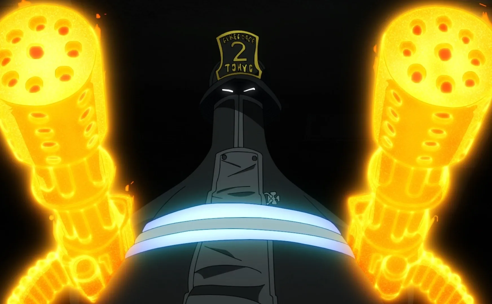 Mais uma vez, o 8ª entra em uma busca atrás dos roupas brancas no Nether, mas dessa vez eles tem ajuda da 2ª brigada mas tudo começa a dar errado quando um exercito de infernais aparecem e os mortos por eles começam a se tornar infernais também, os roupas brancas aparecem, Takeru é gravemente ferido protegendo Tamaki de Orochi, Tamaki que também está muito machucada agora tem que retribuir o favor e proteger Takeru dos infernais, felizmente seus companheiros logo chegam e a ajudam. Os roupas brancas decidem explodir todo o lugar, utilizando o poder dos infernais, p 8ª entra em desespero, mas felizmente, Maki e seu irmão conseguem redirecionar todo o fogo da explosão para um lugar onde eles não seriam afetados, salvando assim todos eles.Treinamento em Asakusa
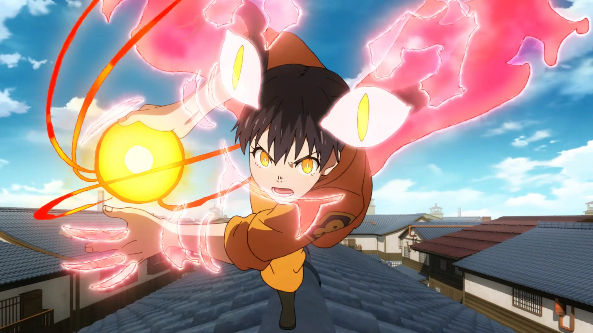 Shinra, Arthur e Tamaki percebem que ainda não são fortes o suficientes para o que esta por vir, por isso vão atrás de Benimaru para treiná-los, o treinamento é árduo e pesado, mas eles conseguem, enfim, ultrapassar seus limites e ficar mais fortes do quer eram quando chegaram. Tudo ocorre bem durante o treinamento, mas é revelado de que hague, foi morto e assim acaba a segunda temporada de Fire Force.SOBRE MIM
Olá, me chamo Nicolas Santos, tenho 18 anos e estudo Análise e
Desenvolvimento de Sistemas. Meu personagem favorito é o Arthur,
gostei muito de como ele foi trabalhado. Criei essa página como
projeto individual pedido pela SPTech(São Paulo Tech School),
resolvi fazer sobre Enen no Shouboutai(Fire Force) uma série de
mangás japonesa. Um dos meus mangás favoritos, terminei de ler ele
recentemente e gostei muito.
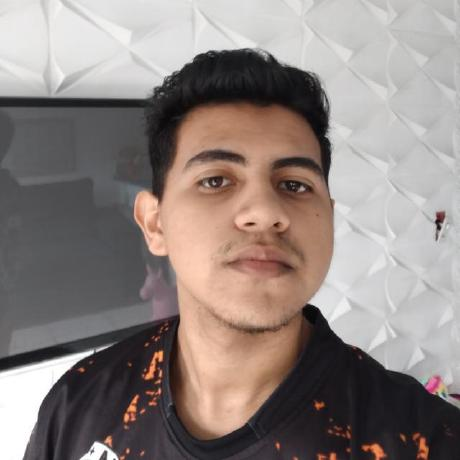